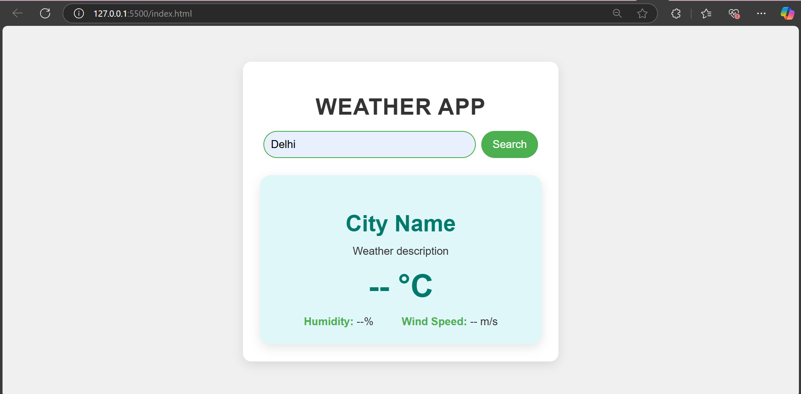

Projects
Weather Website
Project Description:
This project is a weather application designed to provide users with accurate and real-time weather updates, including current conditions, forecasts, and other essential meteorological data. The goal was to create a responsive, visually appealing, and interactive platform that enhances user convenience and showcases modern web development skills.
Technologies Used:
- HTML: To structure the layout of the application.
- CSS: For styling and designing an engaging and responsive user interface.
- JavaScript: To handle interactivity and fetch weather data dynamically.
- Weather API: For obtaining live weather information and detailed forecasts.
Challenges Faced:
- API Integration: Ensuring smooth communication with the weather API for accurate and timely data retrieval.
- Responsive Design: Optimizing the layout for a seamless experience across various devices and screen sizes.
- Error Handling: Managing API errors and creating fallback features to ensure app reliability.
- User Experience: Balancing functionality and design to keep the interface intuitive and easy to use.
Text Editor

Project Description:
The text editor website is a web-based application designed to provide users with a simple yet powerful platform for writing, editing, and formatting text. The primary goal was to create an intuitive interface with essential text-editing features, enabling users to focus on their writing tasks without distractions.
Technologies Used:
- HTML: For creating the website structure and layout.
- CSS: To style the editor with a clean, modern, and responsive design.
- JavaScript: For implementing interactive features like text formatting, saving, and loading content dynamically.
- Local Storage: To enable saving and retrieving user data directly in the browser.
Challenges Faced:
- Designing a user-friendly interface that is visually appealing and easy to navigate.
- Implementing robust text formatting options such as bold, italics, and font adjustments.
- Managing browser storage efficiently for saving and retrieving user content.
- Ensuring compatibility across different browsers and devices for a consistent experience.
This project demonstrates a balance between simplicity and functionality, offering users a seamless text-editing experience through efficient web technologies.
Image Gallery

Project Description:
The image gallery website is a platform that allows users to browse, view, and interact with a collection of images in a visually appealing and organized manner. The goal was to create a responsive, easy-to-navigate website that showcases images in a grid layout, with features such as zooming and categorization for a smooth user experience.
Technologies Used:
- HTML: For structuring the gallery layout and content.
- CSS: To style the gallery with an aesthetically pleasing grid design and responsive features.
- JavaScript: For implementing interactivity, such as image zoom and filtering by category.
- Lightbox Plugin: Used to enhance the image viewing experience with features like full-screen viewing.
- CSS Flexbox/Grid: For creating a flexible and responsive image layout.
Challenges Faced:
- Ensuring the gallery layout is responsive and adjusts well across different screen sizes and devices.
- Implementing smooth image zoom and transition effects for a more engaging user experience.
- Handling large image files efficiently to ensure quick loading times without sacrificing quality.
- Integrating image filtering functionality to allow users to sort images by categories.
This project combines effective design with practical features, offering users a seamless, interactive, and engaging way to explore image collections.
Calculator
.png)
Project Description:
The calculator website is an interactive web application designed to provide users with a simple yet effective tool for performing mathematical calculations. The goal was to create an intuitive, easy-to-use interface that mimics a traditional calculator while offering a smooth and responsive experience across devices.
Technologies Used:
- HTML: Used to structure the calculator's layout and buttons.
- CSS: For styling the calculator’s interface with a clean and responsive design.
- JavaScript: To handle user input, implement mathematical operations, and manage the calculation logic.
- Local Storage: (Optional) To store recent calculations or memory functionality.
Challenges Faced:
- Implementing the correct logic for different mathematical operations and handling edge cases (like division by zero).
- Designing a responsive layout to ensure the calculator is functional and visually appealing on both desktop and mobile devices.
- Managing input validation to prevent invalid operations and ensuring the calculator performs efficiently.
- Handling memory functions, such as clearing or storing results, while maintaining an intuitive user experience.
This project demonstrates the integration of design and functionality, offering a practical and reliable tool for everyday calculations in a user-friendly web format.
View Project